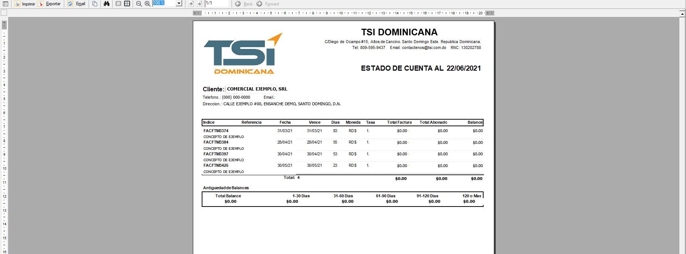
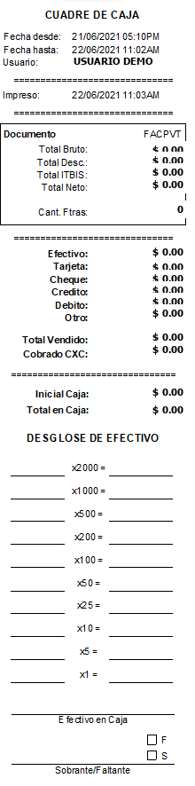

Sistema de gestión · Hecho en República Dominicana
El ERP que se adapta a cómo ya opera su empresa
LogicERP v3 cubre facturación, inventario, cuentas por cobrar y pagar, contabilidad, despacho y punto de venta en un solo sistema, con facturación electrónica e-CF ante la DGII. Diez módulos, un mismo documento, una sola verdad contable.

Los módulos
Diez sistemas que hablan el mismo idioma
Cada módulo se activa según lo que su empresa necesite hoy y comparte los mismos catálogos, documentos y asientos. Un despacho registrado en DPR mueve inventario en INV, cobra en CXC y contabiliza en CTB sin volver a teclear nada.
FTMFacturación de MercancíasFacturas, proformas, devoluciones, vendedores, ofertas y comisiones.
INVInventario de MercancíasAlmacenes, existencias, lotes y vencimientos, costeo e inventario físico.
CXCCuentas x CobrarCarteras, créditos, cobradores, antigüedad de balances y estados de cuenta.
CXPCuentas x PagarSuplidores, cargos, pagos, categorías de gasto y programación de desembolsos.
CTBContabilidad GeneralCatálogo de cuentas, asientos automáticos, bancos y conciliación bancaria.
DPRDespacho & RecepciónEnvíos, rutas, empacadores, consulta de seriales y recepción confirmada.
LQDLiquidación de MercancíasImportaciones, costos de aduana y liquidación prorrateada por línea.
PVTPunto de VentaCaja rápida, cuadre de caja, medios de pago y facturación de consumo.
PVRPunto de Venta · Restaurantes & BaresMesas, comandas, división de cuentas y control de consumo interno.
NDPNómina de PersonalEmpleados, nómina, retenciones de ley y reportes para TSS y DGII.
Facturación electrónica
El e-CF sale de la misma factura que ya emite
No hay un segundo sistema ni una hoja aparte. Al guardar la factura, LogicERP arma el comprobante fiscal electrónico, lo firma, lo transmite a la DGII, guarda el XML firmado y el código QR contra el documento, y lo envía por correo al cliente con su representación impresa.
- Tipos 31, 32, 33, 34 y los comprobantes especiales, con su secuencia y vencimiento controlados.
- Anulaciones, notas de crédito y débito y aprobación comercial según los formatos vigentes de la DGII.
- Back office de monitoreo: cola de envío, reintentos, acuses, artefactos descargables y auditoría por transacción.
- Reportes fiscales 606, 607 y 608 generados desde los mismos movimientos.

Representación impresa generada por el servicio de facturación electrónica, con plantilla configurable por empresa.
Habilitación
Lo llevamos de la mano hasta ser Emisor Electrónico
Asesoramos, guiamos y acompañamos a la empresa en toda la habilitación y la dada de alta como Emisor de Comprobantes Fiscales Electrónicos ante la DGII, incluyendo la adquisición y la custodia del Certificado Digital. Usted no tiene que aprender el proceso.
- Postulación
Solicitud y registro de la empresa como emisor electrónico ante la DGII.
- Certificado Digital
Gestionamos su adquisición y quedamos a cargo de su custodia y renovación.
- Certificación
Corremos el set de pruebas de comprobantes hasta que la DGII aprueba.
- Producción
Acompañamiento en las primeras emisiones reales y en el primer cierre fiscal.
Es lo que normalmente nos toma dejarlo habilitado y emitiendo e-CF.
De la postulación a la primera factura electrónica real.
Bandeja de aprobación: el documento, el balance del cliente y el análisis de crédito en una sola pantalla.
Cómo se trabaja
Pensado para quien pasa el día entero adentro
LogicERP no esconde información para verse limpio. Las pantallas transaccionales muestran el documento, su detalle, sus totales y el contexto del cliente al mismo tiempo, porque quien aprueba un crédito necesita verlo todo antes de decidir.
- Captura por teclado de punta a punta: tabulación en orden de trabajo y accesos rápidos en cada acción.
- Grids densos con totales, filtros y exportación a Excel en cada consulta.
- Aprobaciones con control de límite de crédito y antigüedad de balances antes de facturar.
- Auditoría por documento: quién lo creó, quién lo modificó y cuándo.
Casos de uso
Configurado para su operación, no para un promedio
Nos involucramos en el proceso y la lógica de negocio de cada empresa. El sistema es altamente personalizable para delimitar las operaciones dentro del marco regulador que le aplica.
Ferreterías
Miles de códigos con unidades distintas de compra y venta, existencia por almacén y búsqueda por descripción o referencia en el mostrador.
Tiendas
Mercancía por variante, temporadas, ofertas y descuentos con control de quién los puede autorizar.
Supermercados
Caja rápida con lector de código, lotes y vencimientos, cuadre por turno y factura de consumo electrónica en el mostrador.
Minoristas
Punto de venta, medios de pago mixtos, crédito a clientes conocidos y un solo inventario detrás de todo.
Mayoristas e importadores
Listas de precios por canal, despacho por ruta y liquidación de importaciones con prorrateo de flete, seguro e impuestos al costo de la línea.
Profesionales independientes
Servicios e igualas mensuales recurrentes, sin inventario, con crédito fiscal electrónico y estado de cuenta por cliente.
Reportes
Los reportes los arma el usuario, no el programador
Cada reporte se parametriza desde la propia interfaz: el rango de fechas, el almacén, el vendedor, la cartera, el nivel de agrupación, qué columnas se ven y cómo se ordenan. El usuario guarda la configuración que le sirve y la vuelve a correr cuando la necesita, sin pedirle nada a nadie.

El visor trae Imprimir, Exportar y Email en la misma barra: lo que se ve en pantalla es lo que sale en PDF, en Excel o en el correo del cliente.
Periféricos
Conectado al equipo que ya está en el mostrador
La integración con periféricos viene resuelta desde el sistema, no con programas intermedios ni utilitarios de terceros. Si el equipo ya está instalado, LogicERP habla con él.
Comparativa
Dónde se nota la diferencia
Comparación honesta frente a las dos alternativas que solemos encontrar cuando entramos a una empresa: hojas de cálculo con un facturador aparte, o un ERP internacional adaptado a la fuerza. La diferencia más grande no está en la lista de funciones: está en qué pasa cuando usted llama.
| Hojas de cálculo + facturador | ERP internacional genérico | LogicERP v3 | |
|---|---|---|---|
| Tiempo de respuesta | Nadie a quién llamar | Ticket a un canal internacional, sin compromiso de hora | Respuesta inicial de 1 a 4 horas y SLA de resolución de 24, 48 y 96 horas según severidad |
| Soporte técnico | Interno, con quien sepa Excel | Partner rotativo que no conoce su configuración | El mismo equipo que levantó el proceso y lo implementó |
| Implementación en la nube | No aplica | Sí, con su propio esquema de licencias | En la nube o en su servidor, con la misma base de datos |
| Integración con plataformas de terceros | Exportar y volver a teclear | Sujeta al marketplace del fabricante | Integraciones a medida con bancos, portales y sistemas del cliente |
| Procesos específicos | Total, pero sin controles | El proceso se adapta al sistema | Se desarrolla el proceso que su operación exige, sobre su lógica de negocio |
| Normativa dominicana | NCF y 606/607 armados a mano | Requiere localización de terceros | e-CF, NCF y reportes DGII de fábrica |
| Una sola verdad contable | Cada área con su archivo | Sí | Sí, sobre una base de datos única |
| Costo de arranque | Bajo | Licencias por usuario y consultoría externa | Cotización por módulos y alcance real |
Alguien toma la solicitud, la clasifica y le dice a qué hora queda resuelta. Siempre, sin importar la severidad.
Resolución comprometida según severidad
La operación está detenida: no se puede facturar, cobrar ni cerrar caja.
Un proceso falla o da un resultado incorrecto, pero hay forma de seguir operando.
Ajustes, reportes nuevos, configuración y solicitudes de mejora.
Clientes
Lo que dicen quienes lo usan todos los días
Estos espacios están reservados para testimonios reales. Envíenos las citas y los cargos que quiera publicar y los colocamos aquí.
Espacio reservado para el testimonio de un cliente de distribución: qué problema tenía antes y qué cambió al mes de estar operando.
Espacio reservado para el testimonio de un contador o gerente financiero: cierre mensual, e-CF y reportes a la DGII.
Espacio reservado para el testimonio de un cliente de retail o restaurante: cuadre de caja y velocidad en el mostrador.
Sobre nosotros
Un socio de proceso, no un vendedor de licencias
LogicERP lo desarrolla y lo implementa TSI Dominicana, desde Santo Domingo Este. Nos involucramos en todo el proceso y la lógica de negocio de la empresa, y terminamos siendo socio comercial estratégico y consultor de procesos, no solamente el suplidor del sistema.
- Más de 20 años de experiencia en el mercado dominicano.
- Levantamiento de procesos antes de configurar el sistema.
- Personalización para delimitar las operaciones dentro del marco regulador.
- Políticas de seguridad a nivel de registros y a nivel de campos.
- Trazabilidad de operaciones y registro de cambios.
- Capacitación al personal y acompañamiento en el primer cierre.
- Personal tecnico capacitado, con protocolos de savalguarda de informacion.
- Soporte remoto y SLA.
- Esquema de pago por uso y mantenimiento mensual.

Preguntas frecuentes
Lo que siempre nos preguntan
¿Cuánto tarda una implementación?
Depende del alcance y de qué tan documentados estén sus procesos. Una empresa que arranca con facturación, inventario y cuentas por cobrar suele estar operando en semanas; un grupo multiempresa con importación y contabilidad completa toma más, porque primero levantamos el proceso y luego configuramos. En la demostración le damos un rango con base en su operación real, no un número genérico.
Todavía no estoy habilitado como emisor electrónico. ¿Me ayudan con eso?
Sí, y es parte del trabajo. Asesoramos y acompañamos a la empresa en toda la habilitación y la dada de alta como Emisor de Comprobantes Fiscales Electrónicos ante la DGII: la postulación, la adquisición del Certificado Digital y su custodia, el set de pruebas de certificación y las primeras emisiones reales. Normalmente completamos el proceso en 10 días o menos. No hay que contratar a un tercero para esa parte ni aprender el proceso por cuenta propia.
¿Ya estoy obligado a emitir e-CF. LogicERP lo resuelve?
Sí. La emisión, firma y transmisión del comprobante fiscal electrónico a la DGII sale del mismo documento que usted factura, junto con el XML firmado, el código QR y el envío por correo al cliente. También cubre anulaciones, notas de crédito y débito, la aprobación comercial y los reportes 606, 607 y 608.
¿Puedo empezar con un módulo y crecer después?
Sí, y es lo más común. Se activa lo que necesita hoy — normalmente facturación e inventario — y se agregan cuentas por cobrar, cuentas por pagar, contabilidad o punto de venta cuando la operación lo pida. Los módulos comparten catálogos y documentos, así que agregar uno no implica migrar nada.
¿Qué necesito para instalarlo?
LogicERP v3 es una aplicación de escritorio para Windows que trabaja contra una base de datos MySQL en su servidor o en la nube, con los puestos de trabajo conectados en red. El back office de facturación electrónica es un servicio web al que se accede desde el navegador. En la evaluación revisamos su infraestructura actual y le decimos qué hace falta.
¿Migran mis datos actuales?
Sí. Migramos catálogos de clientes, suplidores y mercancías, y los balances de apertura de inventario, cuentas por cobrar, cuentas por pagar y contabilidad. Lo que traemos y con qué corte se define en el levantamiento, para que el primer cierre en LogicERP cuadre con su último cierre anterior.
¿Cuánto cuesta?
Se cotiza por módulos, cantidad de usuarios y alcance de la implementación, porque una empresa de servicios con tres usuarios y un grupo importador con cuatro razones sociales no tienen el mismo sistema. Escríbanos y le preparamos una cotización con el detalle de qué incluye.
Solicitar demostración
Le mostramos su propio proceso corriendo en LogicERP
Cuéntenos qué hace su empresa y en qué se le va el tiempo hoy. La demostración la hacemos sobre su caso — sus documentos, sus almacenes, su forma de cobrar — no sobre una empresa de ejemplo.